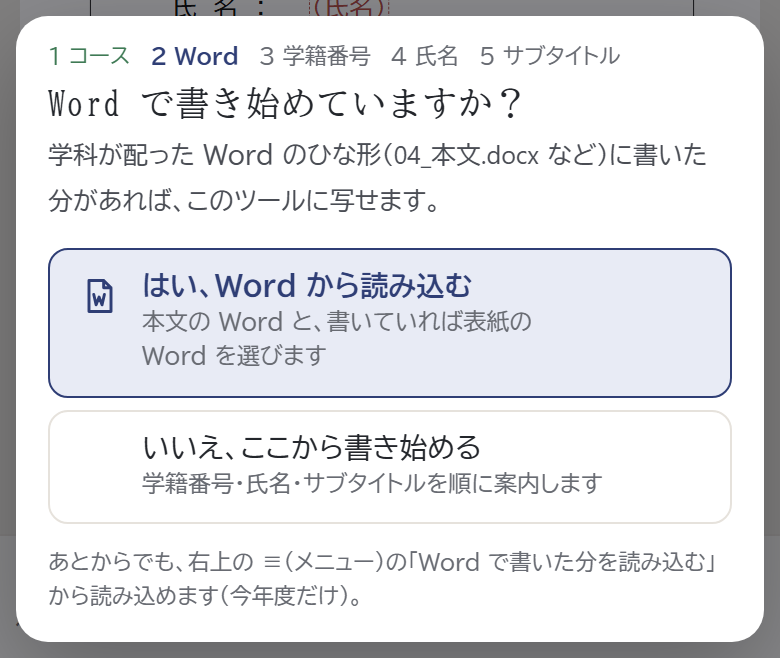
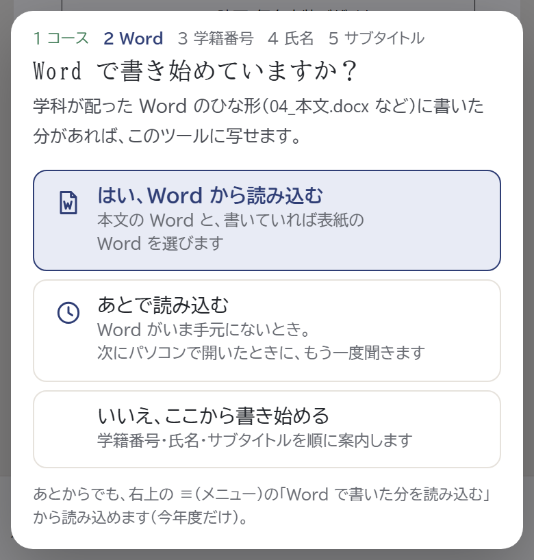
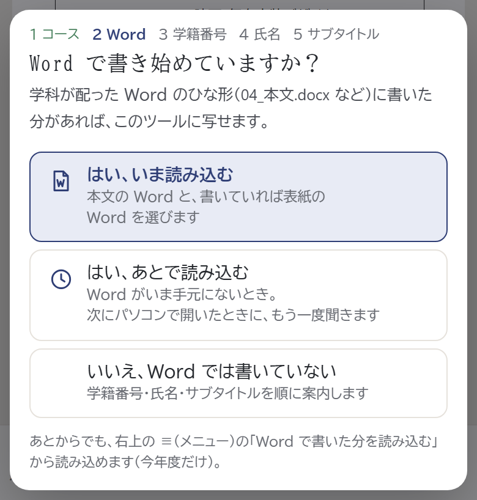
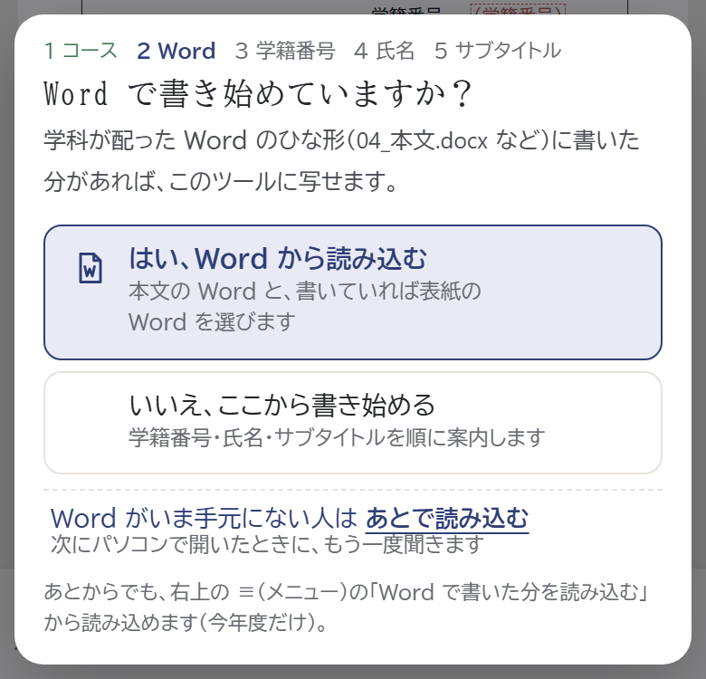
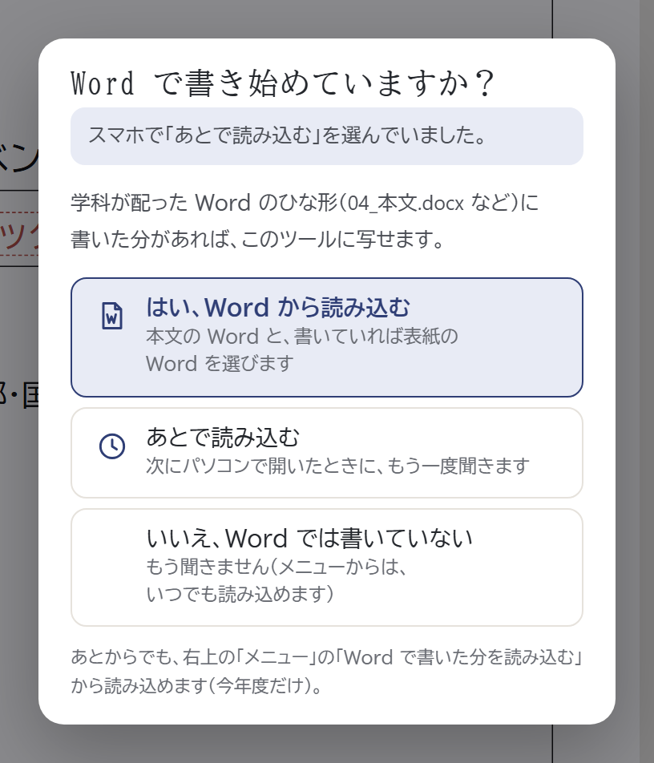

「Word で書き始めていますか？」に「あとで」を足す
教室ではスマホで登録だけを済ませ、Word はあとでパソコンから読み込む人のための選び方です（スマホの画面）。
今の形
「はい」と「いいえ」の2つ。

案A 3つ目を足す おすすめ
「はい」と「いいえ」の間に「あとで読み込む」。

案B 「はい」を2つに
「はい」を「いま」と「あとで」に分ける。

案C 小さな文字で
ボタンは2つのまま。下に小さな字で。


「あとで」を選んだ人が、パソコンで開いたとき
- ログインすると、スマホの原稿が開いたあと、同じ「Word で書き始めていますか？」が、もう一度出ます（コースなどの登録は、もう聞きません）。
- 配った「Word で書き始めた人へ」の 3 と同じ画面なので、プリントのとおり「はい」を押せば進めます。
- もう一度「あとで」を押せば、次にパソコンで開いたときに、また聞きます。「いいえ」なら、もう聞きません。
- 右上の「メニュー」の「Word で書いた分を読み込む」は、今までどおり使えます。